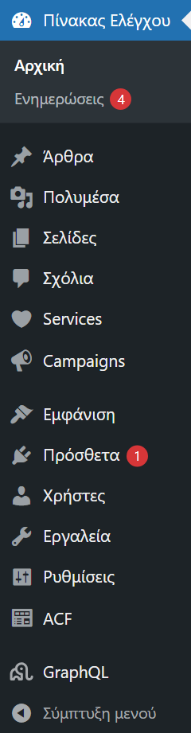
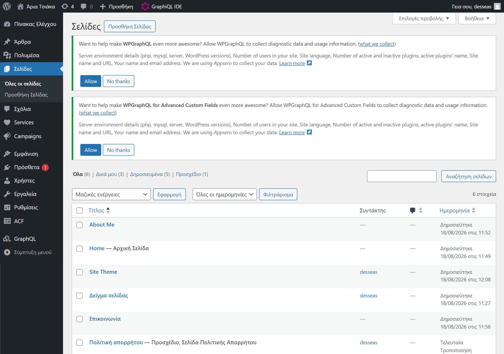
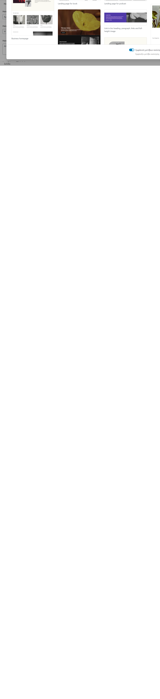
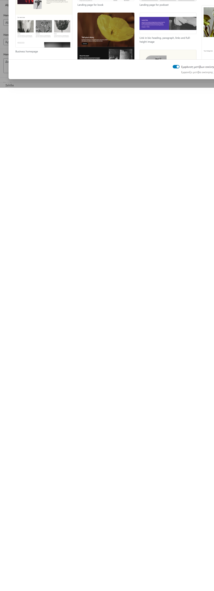
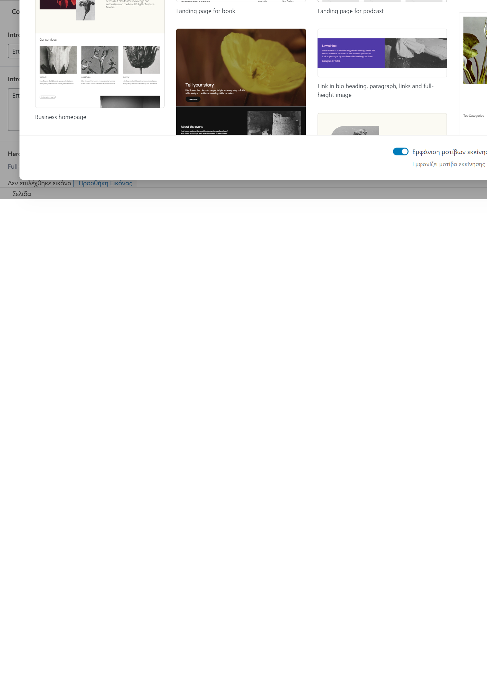
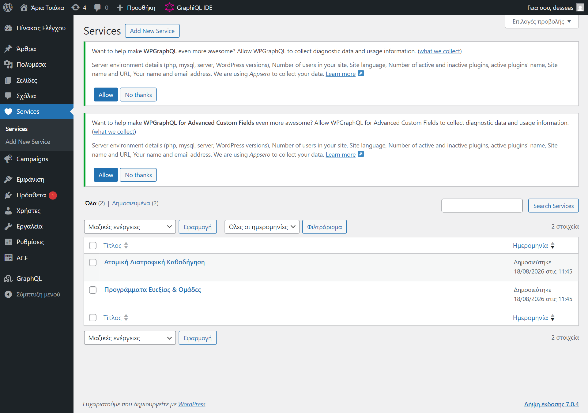
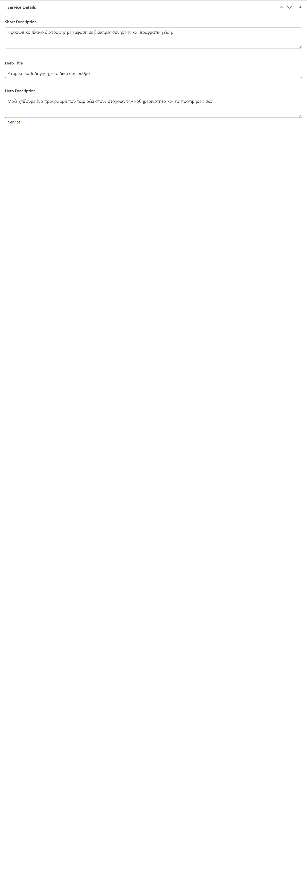
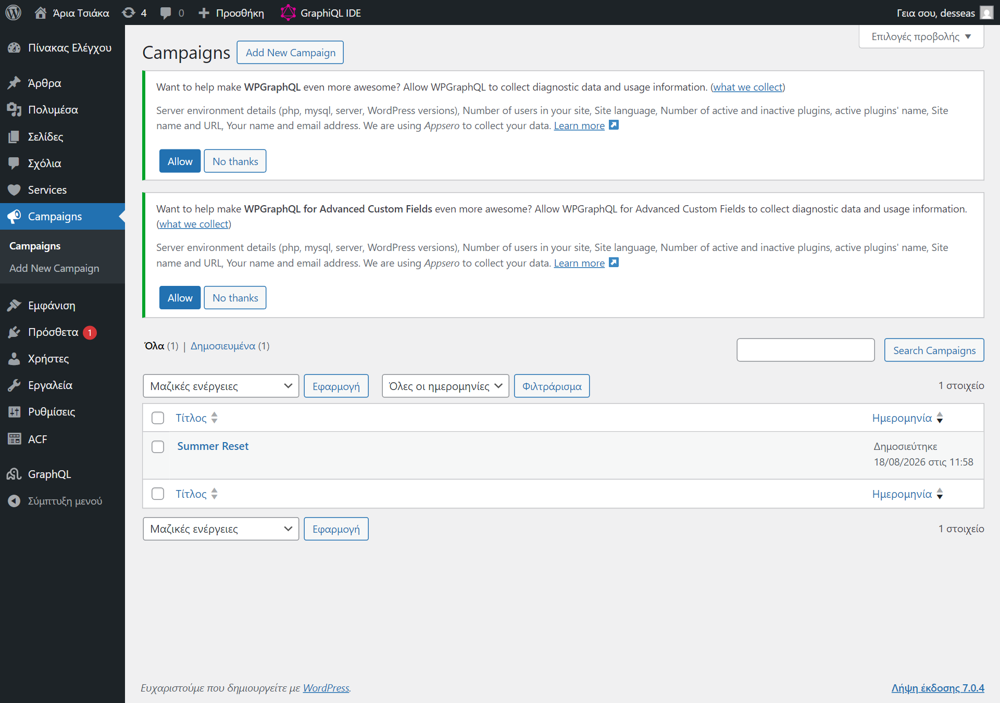
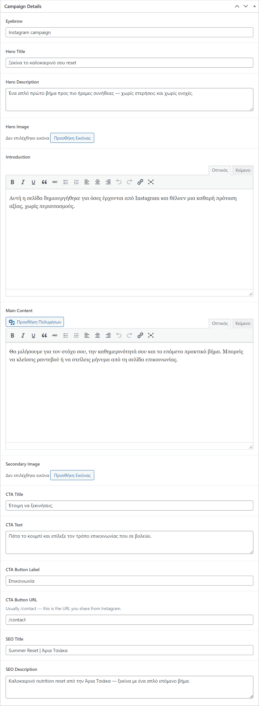
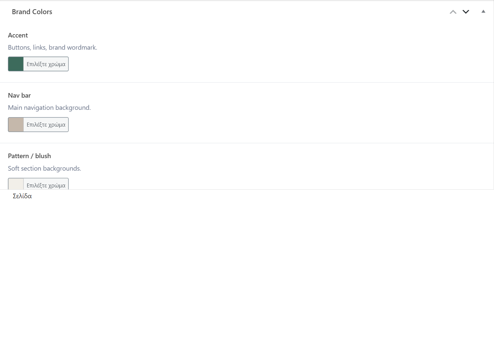

Άρια Τσιάκα — how to edit the website from WordPress
Edit text and images in WordPress → click Αποθήκευση / Update → the public site refreshes.
Left menu in WP Admin → open the matching item.

| On the website | Edit in WordPress |
|---|---|
/ Homepage | Σελίδες → Home (Front Page) |
/about | Σελίδες → About Me (slug about) |
/contact | Σελίδες → Επικοινωνία (slug contact) |
/services list | Services (each published service = one card) |
/services/… | Services → open that service |
/campaigns/… | Campaigns → open that campaign |
| Brand colors | Σελίδες → Site Theme |
| Phone / email in header | Σελίδες → Επικοινωνία → Phone / Email |

/Do not write the page in the empty block editor. Scroll to the Homepage fields and edit there.
Once: Settings → Reading → static homepage = Home.

| Field group | Controls on the site |
|---|---|
| Hero | Big banner text, buttons, image |
| About preview | Dark “Γνωρίστε με” section |
| Services section | Title/intro above service cards |
| Approach / Philosophy / Quote | Middle sections |
| FAQ | Accordion (see format below) |
| Final CTA / Instagram | Bottom conversion strips |
| SEO | Browser tab & Google snippet |
Service cards on the homepage come from published Services, not from Home fields.
/aboutKeep the slug about.

/contactPhone and Email here also appear in the header and footer of the public site.

WhatsApp example: https://wa.me/30XXXXXXXXXX
/services & detail pages
| Action | Result |
|---|---|
| Add New Service | New card on home & /services + /services/your-slug |
| Edit | Updates that page and cards |
| Unpublish / trash | Removed from the site |

The /services listing hero title is fixed in the frontend for now. Cards and detail pages are fully CMS-driven.
Public URL: /campaigns/ + slug (example /campaigns/summer-reset).


This page is not in the public menu. Do not delete it.

Benefits, Process, Qualifications, Opening Hours — one item per line:
First item Second item Third item
Blank line between each Q&A pair:
First question? First answer. Second question? Second answer.
about, contact.| Symptom | Fix |
|---|---|
| Homepage fields missing | Settings → Reading → Front page = Home |
| About/Contact fields missing | Confirm slugs about / contact; ask developer if box still missing |
| Change not on site | Confirm Published, wait a few seconds, hard-refresh |
| Wrong phone in header | Σελίδες → Επικοινωνία → Phone |
Not editable in CMS yet: main menu labels, logo name string, /services listing hero copy — ask a developer.